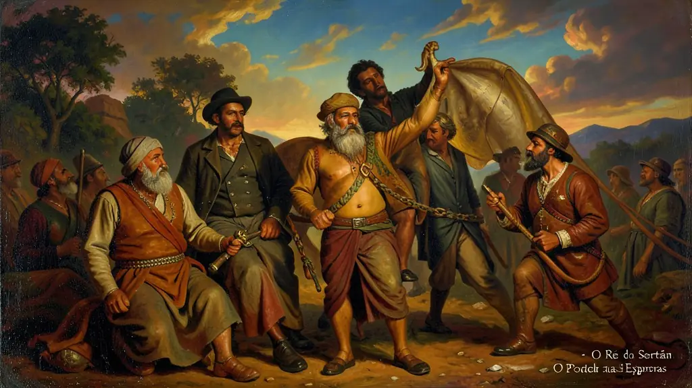
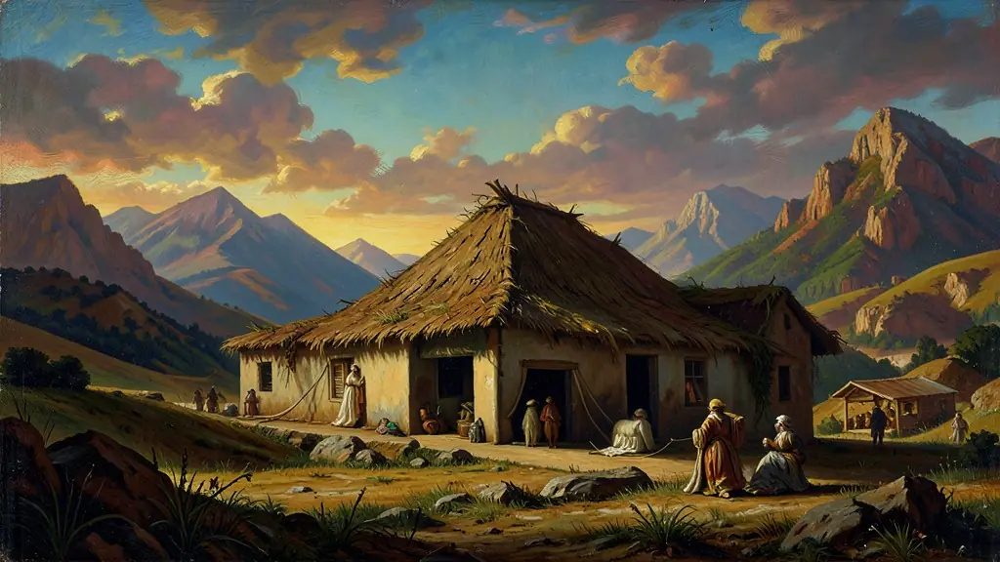
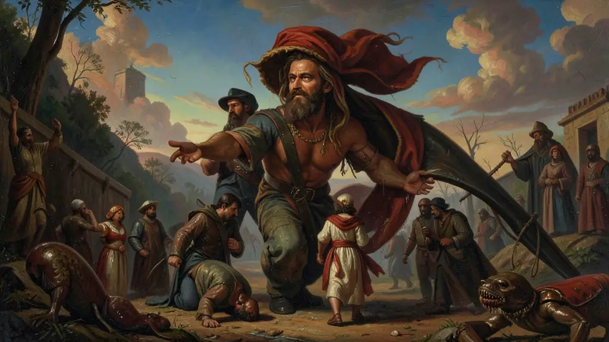

Capítulo 01
1. O Coronel: O Rei do Sertão
O coronel não era um militar de carreira, mas um fazendeiro rico que pagava para ter esse título. Ele era o juiz, o delegado e o banco de sua região. Ninguém conseguia emprego ou justiça sem passar pelas mãos do 'padrinho'. Nas fazendas, o coronel era uma figura divina e terrível ao mesmo tempo: podia dar uma cesta básica ou mandar o jagunço queimar a casa do vizinho rebelde no meio da noite.

Capítulo 02
2. Voto de Cabresto: A Democracia na Rédea
Como o voto era aberto, o eleitor analfabeto recebia a cédula já preenchida pelo jagunço do coronel na porta da seção eleitoral. Votar em outro candidato era um suicídio social. O eleitor era literalmente conduzido como um animal de carga ('cabresto') até a urna. Isso garantia que as oligarquias paulistas e mineiras nunca perdessem uma eleição nacional importante por décadas.

Capítulo 03
3. Clientelismo: A Moeda da Troca
A política na República Velha era baseada na troca de serviços. O coronel pagava o caixão do filho do empregado ou dava uma carta de indicação para o sobrinho ser funcionário público. Em retorno, a família inteira devia fidelidade eleitoral eterna. Essa dependência perpétua impedia que o povo pensasse em mudanças sociais, pois a cada favor recebido, um pedaço da liberdade era entregue ao coronel.

Capítulo 04
4. Comissão de Verificação: A Máquina da Degola
Mesmo que um opositor ganhasse a eleição no voto real, ele passava pela Comissão de Verificação no Congresso Nacional. Se ele fosse contra o governo, os parlamentares simplesmente diziam que houve 'fraude' e não davam o diploma ao eleito. Esse processo era chamado de 'degola'. O sistema era blindado para que apenas os amigos do rei governassem o Brasil.
Capítulo 05
5. O Legado de Mandonismo
O coronelismo de chapéu e bota da República Velha acabou, mas o 'mandonismo' local continuou. No Brasil moderno, ele se transformou em 'currais eleitorais' nas periferias e em oligarquias familiares que dominam rádios e emissoras de TV em estados inteiros. O ENEM exige que o aluno perceba como essas raízes históricas de troca de voto por favores imediatos ainda dificultam a democracia brasileira hoje.
O Coronelismo foi a espinha dorsal do sistema político na República Velha brasileira (1889-1930). Como teorizou Victor Nunes Leal, não se tratava apenas do domínio brutal pela força, mas de um complexo sistema de reciprocidade e dependência que unia o governo central às lideranças rurais (os 'coronéis') através do município.
O coronel oferecia proteção e benesses a uma clientela empobrecida em troca de votos (o 'voto de cabresto'), que eram fundamentais para fraudar eleições e garantir a manutenção das oligarquias no poder. O clientelismo e o mando local anestesiavam a oposição, perpetuando o poder nas mãos dos proprietários fundiários.
Em questões do Enem, exige-se do aluno o entendimento de que a República não instaurou a verdadeira democracia, mas sim uma oligarquia sustentada pela Política dos Governadores. O coronelismo moldou uma herança de clientelismo e mandonismo que, embora transmutada, reverbera na cultura política do interior brasileiro atual.
Fonte: LEAL, Victor Nunes. Coronelismo, Enxada e Voto. São Paulo: Alfa-Omega, 1978.
Atividades interativas
Questões para fixar
A expressão 'Voto de Cabresto' na República Velha (1889-1930) descrevia uma situação em que:
O mecanismo da 'Degola', praticado pela Comissão de Verificação de Poderes no Congresso Nacional na República Velha, servia para:
Qual era o principal mecanismo utilizado pelos coronéis para garantir o voto de seus 'cabras' durante a Primeira República?
Qual foi o fator que contribuiu para o declínio do coronelismo no Brasil?
Qual era a relação entre o coronel, o governador e o presidente da República na estrutura política da Primeira República?